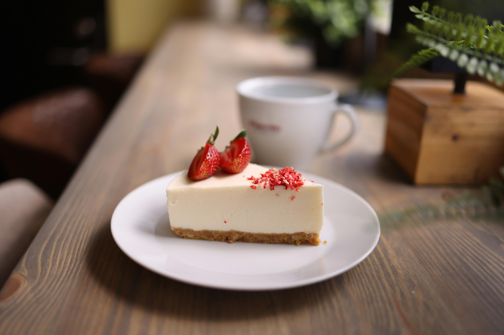

Cheesecake

This is a comforting Cheesecake recipie, just like Grandma used to make!
Also quick and simple, with just three Ingredients!
Ingredients
- 125g plain sweet biscuits
- 395g tin sweetened condensed milk
- 3 packets of cream cheese
Steps
- Preheat oven to 180°C fan forced.
- Grease and line a springform pan.
- Crush biscuits to fine crumbs.
- Add 2 tbspns of the sweetened condensed milk and stir to combine.
- Spoon into prepared pan and press over the base.
- Bake for 10 minutes.
- Meanwhile, using electric beaters, beat the remaining sweetened condensed milk with the cream cheese
in a large bowl until smooth.
- Pour over biscuit base.
- Bake for 40 minutes.
- Refridgerate overnight before decorating with chopped fruit and serving.
Home